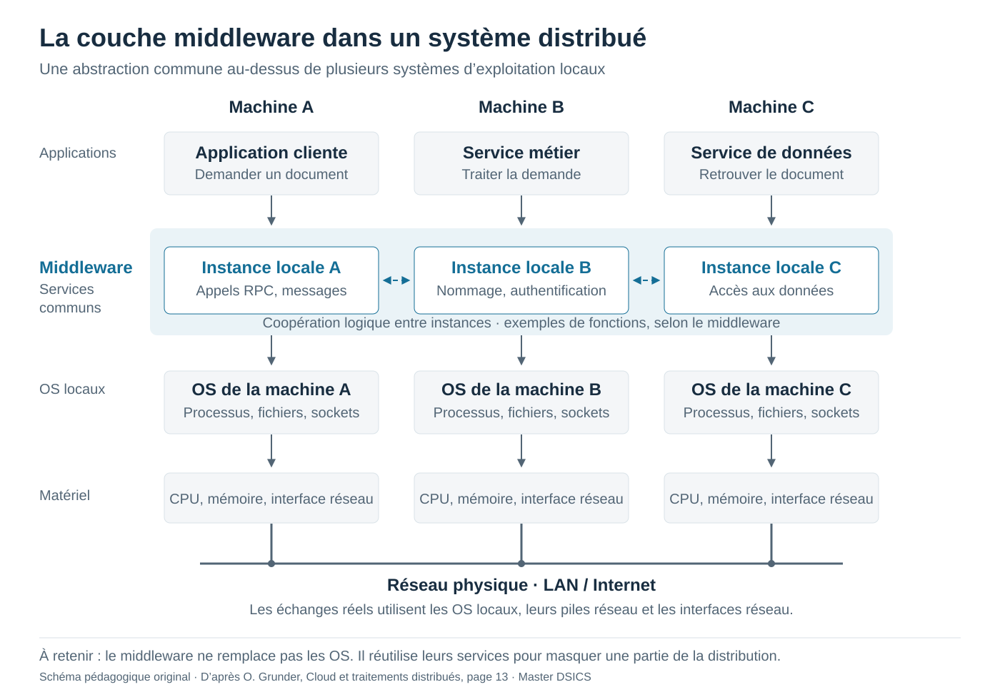

La charge et l’attente
Modèle M/M/1Au-delà de ×20, la courbe dépasse le cadre. À 99 %, le rapport atteint ×100.
Pourquoi ajouter de la capacité ?
À l’approche de la saturation, l’attente augmente beaucoup plus vite que la charge. Diminuer le temps de traitement peut aider ; ajouter des serveurs demande aussi de répartir les requêtes et de vérifier les autres goulots d’étranglement.
À toi de vérifier
Avec S = 10 ms et U = 80 %, combien vaut R ?
Les mêmes données, deux stratégies
Choisis un document pour voir quel nœud peut le servir.
La disponibilité a un coût
Les copies permettent de lire ailleurs après une panne, mais elles peuvent être anciennes. Le partitionnement répartit le volume ; sans copie supplémentaire, la panne d’une partition rend ses données indisponibles.
À toi de vérifier
Deux nœuds contiennent chacun l’intégralité d’une base. C’est…
Trouver le responsable d’une clé
Identifiants sur 5 bitsEntre une clé entière de 0 à 31.
Rejouer l’exemple du cours
Départ 9, clé 3 : le chemin est 9 → 28 → 1 → 4. Le nœud 4 est responsable de la clé 3. Essaie ensuite la clé 30 : son responsable est le nœud 1.
À toi de vérifier
Dans cet anneau, qui est responsable de la clé 12 ?
Louer une application à un ASP
Qui gère chaque couche ?
Le dilemme des ASP historiques
Le navigateur évitait d’installer un logiciel métier sur chaque poste, mais les interfaces web étaient limitées. Le client natif offrait plus de confort, au prix d’installations et de mises à jour locales.
À toi de vérifier
Avec une offre SaaS, que loues-tu principalement ?
Une couche commune, des instances locales
Ouvrir le schéma en grand ↗
Lire le schéma
L’application appelle une fonction du middleware. Celui-ci prépare par exemple un message, trouve le service distant et utilise les sockets de l’OS local. Le réseau transporte le message ; l’instance distante le traite et transmet la demande au service concerné. La réponse parcourt le chemin inverse.
Le middleware peut fournir RPC, messagerie, nommage ou authentification. Les fonctionnalités exactes dépendent du produit. Le schéma montre la voie d’un échange distribué : une application peut aussi utiliser directement d’autres services de son OS.
À toi de vérifier
Le middleware remplace-t-il le système d’exploitation de chaque machine ?
Dans le cours, l’expression « OS des systèmes distribués » est une analogie : le middleware fournit des abstractions communes et cache certains détails de distribution. Chaque machine conserve son propre OS.
Référence : une machine traite en moyenne μ = 100 req/s, soit S = 10 ms.
Verticale
Une machine plus puissante · scale up
On ajoute ou remplace des ressources sur une machine : CPU, mémoire ou stockage. La limite reste la capacité de cette machine ; elle demeure un point de panne.
Horizontale
Plusieurs machines · scale out
On ajoute des machines et on répartit le travail. Il faut gérer l’équilibrage, les données et la coordination. La tolérance aux pannes exige aussi des mécanismes adaptés.
Lire les hypothèses avant de comparer
Modèle d’entraînement idéal : la capacité verticale est supposée proportionnelle au facteur choisi. En horizontal, les arrivées sont réparties uniformément et indépendamment dans n files M/M/1 séparées ; chaque machine conserve sa capacité μ. On néglige les coûts du répartiteur, du réseau et de la coordination. Ce n’est pas une file unique M/M/n. En pratique, doubler les ressources ne garantit pas de doubler les performances.
Verticale : U = λ/(kμ), R = 1/(kμ − λ). Horizontale : λ par nœud = λ/n, U par nœud = λ/(nμ), R = 1/(μ − λ/n). Ici ces R sont en secondes ; l’affichage les convertit en millisecondes. Chaque formule exige un régime stable.
Un vocabulaire à ne pas mélanger
La mise à l’échelle verticale augmente les ressources d’une machine. La distribution verticale évoquée page 34 du support répartit les couches d’une application entre plusieurs machines : c’est une autre notion.
Rappel : le cours distingue aussi l’évolutivité en taille, géographique et administrative. Verticale et horizontale sont des stratégies de mise à l’échelle, pas ces trois dimensions.
À toi de vérifier
Passer d’un serveur de 16 Go de RAM à un serveur de 64 Go, c’est…
Exercices d’entraînement proposés à partir des notions du support. Ils ne constituent pas une liste de questions annoncées pour l’examen.
Afficher le mémo des formules
File M/M/1 stable
μ = 1/S
U = λ/μ
R = 1/(μ − λ) = S/(1 − U)
L = U/(1 − U)
p₀ = 1 − U
Loi de Little
L = λR
Dimensionnement idéal
n ≥ λ/(U_max × μ)
Arrondir au supérieur, n ≥ 1
Recherche aléatoire
E[K] ≈ N/r
Capteurs
τ = T_actif / (T_actif + T_sommeil)